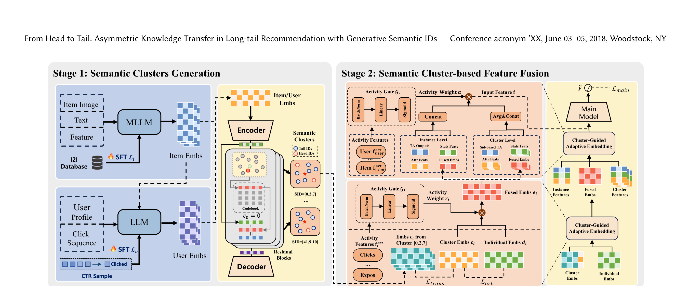
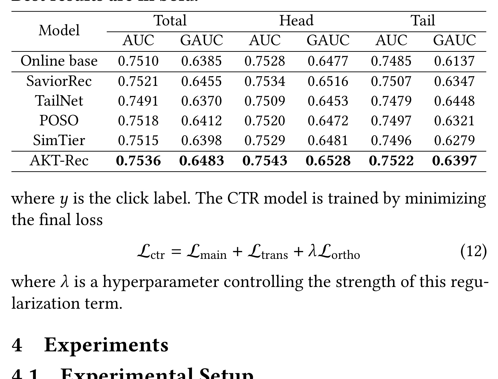
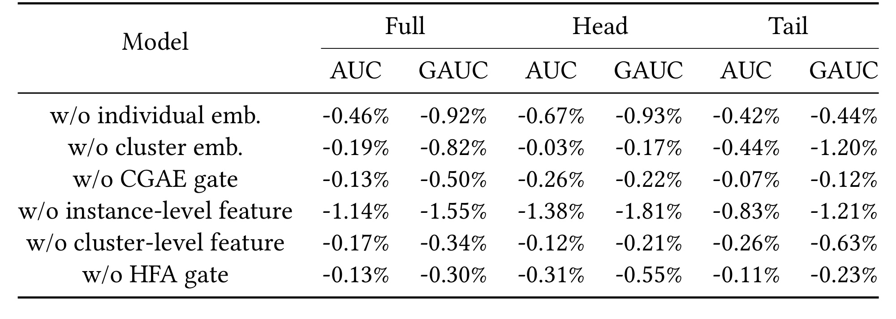
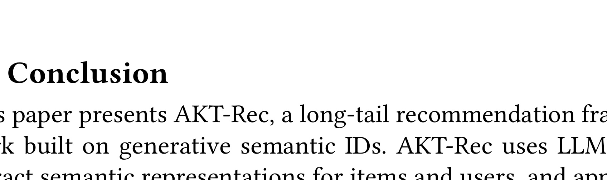

这篇 arXiv 论文《From Head to Tail: Asymmetric Knowledge Transfer in Long-tail Recommendation with Generative Semantic IDs》来自 Alibaba Group，一作 Chenyi Yan，合作机构包括 Peking University；论文入口是 arXiv:2605.23310。论文提出 AKT-Rec，把多模态 LLM 生成的用户/物品语义表示离散成 Semantic ID，再围绕语义簇做“头部到尾部”的非对称知识迁移，用于工业电商长尾 CTR 推荐。代码或项目页本轮未核验到公开入口，阅读重点是它怎样把 LLM4Rec、RQ-VAE Semantic ID、长尾迁移和线上低延迟排序链路接在一起。
1. 背景和问题
长尾推荐在电商场景里不是一个边缘问题，而是候选集合扩张后几乎必然出现的主问题。平台上少数高曝光商品和高活跃用户贡献了大量点击、加购和成交日志，模型可以从这些 head IDs 上学习稳定的协同过滤模式；但绝大多数商品曝光极低，很多用户也只有很短的历史序列，传统 ID embedding、序列兴趣建模和用户画像在这些 tail IDs 上都缺少足够监督。对 CTR 排序来说，长尾不是单纯的“冷启动”，因为很多尾部商品并非完全无内容，也不是完全无交互，而是内容信号、弱协同信号、低频曝光和用户行为稀疏同时存在。系统需要让这些稀疏 ID 借到相似头部 ID 的信息，同时又不能把尾部噪声反向污染头部表示。
已有路线通常从三个方向处理这个问题。第一类是图传播或图增强方法，把用户—物品交互图、物品共现图或元路径图作为结构，再用 GCN、contrastive graph learning 或图增强把头部节点的信息传播到尾部节点。它的优点是能显式利用协同结构，但工业场景里图边非常稀疏且噪声重，人工构图规则也会把偶然共现、促销曝光、频道偏置混进相似关系。第二类是样本增强或表示增强，用伪交互、类别重采样、embedding augmentation 等方式给尾部 item 补监督。这类方法能缓解训练分布倾斜，但伪样本质量难控，容易把头尾分布差异“抹平”成错误监督。第三类是 LLM 或 MLLM 内容增强，用商品标题、图像、描述、类目和属性生成内容表示，试图在协同信号不足时用语义补齐。这条路线在冷启动和多模态商品理解上很有吸引力，但如果排序主干仍由传统 ID 协同信号支配，LLM 内容向量往往只是辅助特征，无法决定长尾迁移方向。
AKT-Rec 的切入点是“迁移方向不应对称”。很多长尾推荐方法隐含假设同簇 ID 应该互相拉近，或者相似 ID 之间可以双向共享信息；但在电商推荐中，头部 ID 的表示通常更可信，尾部 ID 的观测更少、更偏、更容易受一次活动或一次曝光策略影响。如果把尾部噪声无差别反向推给头部，可能降低头部商品和活跃用户上的精排精度；如果完全保护头部、不向尾部迁移，又无法解决长尾性能。论文因此把问题定义成 asymmetric knowledge transfer：让相似语义簇中的头部 ID 主导共享表示，让尾部 ID 更多吸收簇级知识，同时用个体 embedding 保留自己的差异。
这篇论文还把 Semantic ID 放在一个很具体的工业位置。近年来生成式推荐常用 Semantic ID 把 item 映射成离散 token，服务生成式召回或序列建模；AKT-Rec 并不是把 CTR 排序完全改成生成式预测，而是利用 MLLM/LLM 生成的语义表示和 RQ-VAE 离散化，把用户和物品划入语义簇。换句话说，Semantic ID 在这里首先是“可共享语义簇”的索引，而不是最终输出 token。这样设计更贴近已有工业排序系统：主模型仍可以是 MLP、MMoE 或其他 CTR 网络，Semantic ID 负责提供高质量 cluster embedding、簇级序列和头尾迁移结构。
论文的业务背景是 Tmall 移动端推荐，实验数据覆盖 2025 年 6 月到 8 月两个月点击日志，规模达到 3600 万用户和约 3 亿商品。作者把训练集中少于 5 次交互的用户定义为长尾用户，占 85.58%；把曝光少于 10 次的商品定义为长尾商品，占 95.8%；只要用户或目标商品任一为长尾，就算长尾样本，占样本的 22.4%。这个比例说明，绝大多数 ID 都是长尾，但训练样本并非全部来自长尾，排序系统必须同时服务 head 和 tail。若方法只提升 tail 而牺牲 head，线上总收益未必成立；若只在 head 上稳，长尾生态和新品/低频商品分发又会变差。AKT-Rec 的目标正是在两者之间做结构化折中：用头部丰富交互支撑尾部表示，同时通过停止梯度、活动门控和个体嵌入保护头部。
从推荐工程角度看，这篇论文的价值在于它没有把 LLM4Rec 写成离线内容特征生成的孤立模块，而是把 LLM 内容、协同信号、离散语义簇、头尾迁移损失、簇级行为聚合和线上特征融合连成一条排序链路。它回答的问题不是“LLM 是否能理解商品”，而是“LLM 生成的语义 ID 如何在真实长尾 CTR 系统中产生稳定收益”。这也解释了为什么论文强调 online A/B test：长尾推荐方法如果只在公开小数据集或离线分桶上提升，很难证明没有破坏服务链路、延迟约束和头部商品收益；AKT-Rec 至少给出了 Tmall 两周 10% 流量实验中的点击、CTR、CTCVR 和 GMV 结果。
2. 方法
2.1 问题定义：同时存在长尾用户和长尾物品的 CTR 预测
论文把任务写成点击率预测。设用户集合为 $\mathcal{U}$、物品集合为 $\mathcal{I}$，对任意用户 $u\in\mathcal{U}$ 和物品 $i\in\mathcal{I}$，点击标签为：
符号解释：$y_{u,i}$ 是 CTR 训练样本的二值监督，$u$ 表示当前请求用户，$i$ 表示候选商品。这个定义看似普通，但论文特别强调长尾同时发生在用户侧和物品侧，而不是只讨论冷启动 item。用户的历史交互频率与物品的被点击/曝光频率都服从重尾分布，论文用频次函数描述这种稀疏性：
符号解释：$f(u)$ 是用户 $u$ 的历史点击次数，用于刻画用户活跃度；$f(i)$ 是物品 $i$ 被点击或交互的次数，用于刻画物品流行度。实际系统中还会有曝光、加购、成交、停留时长等多种行为，论文在方法中把“点击、曝光等活动特征”输入门控网络。这个频次定义的作用不是只做分桶评估，而是贯穿后续模块：CGAE 用 activity features 决定 cluster embedding 与 individual embedding 的混合权重，HFA 用用户/物品活动和交叉活动决定 instance-level 与 cluster-level 特征的融合比例。
从这个定义出发，AKT-Rec 的目标可以概括成三层。第一层是语义对齐：用 MLLM/LLM 把商品多模态内容、用户历史行为和协同信号编码成更可泛化的连续表示。第二层是离散聚类：用 RQ-VAE 把连续表示压成 Semantic ID，让相似用户或相似商品落在同一簇中，从而建立可共享的簇级表示。第三层是非对称迁移和自适应融合：头部 ID 的知识向尾部 ID 转移，尾部 ID 依赖更多簇级信息，头部 ID 保留更多个体行为信息，最终在 CTR 主模型中按样本活跃度动态融合。
这里有一个容易忽略的设计边界：论文不是要求 Semantic ID 完全替代原始 ID，也不是要求所有用户/物品只用 cluster 表示。相反，它把每个 ID 拆成 cluster component 和 individual component，再用活动门控决定比例。这一点很重要，因为长尾推荐如果只用簇表示，会过度平滑，头部商品的独特偏好和高阶行为模式会丢失；如果只用个体表示，尾部 ID 又学不到。AKT-Rec 的问题定义因此天然是一个 bias-variance trade-off：cluster embedding 降低尾部方差，individual embedding 保留头部精度，gate 决定二者在不同活动水平上的权重。
2.2 Stage 1 表征抽取：把多模态内容与协同信号写入语义向量
AKT-Rec 第一阶段生成 semantic clusters。对物品侧，论文使用预训练 MLLM，例如 GME-Qwen2-VL-7B，把商品图像、文本描述和统计特征编码为 item representation。统计特征包括 $N$ 天 CTR、CVR、加购率等，输入前被离散成分档 level，方便多模态语言模型理解。这个 prompt 设计背后有一个现实考虑：电商商品的纯图文语义并不等于推荐语义，同样是“白色运动鞋”，不同价格带、品牌、转化率和加购率可能对应不同用户群；把统计特征离散后放进 MLLM，可以让表示同时携带内容语义和业务反馈。
为了把协同信号写入 item 表示，论文构建 item-to-item co-occurrence database，识别频繁共现商品对 $\langle i_1,i_2\rangle$，并用对比学习对齐它们的表示。物品侧 InfoNCE 损失写作：
符号解释：$N$ 是 batch size，$K$ 是负样本数量，$\mathbf{z}_i$ 是 anchor 商品表示，$\mathbf{z}^{+}_i$ 是与 anchor 高频共现或协同相近的正样本表示，$\mathbf{z}^{-}_j$ 是负样本表示，$\tau$ 是温度系数。这个损失的直觉是：商品图文内容相似还不够，实际被同一批用户连续点击、比较、加购或替代购买的商品，也应该在 semantic representation 中更接近。它把 LLM 内容向量从“视觉文本语义”拉向“推荐协同语义”。
用户侧则用另一个 LLM 从用户属性和交互序列中生成 user semantic representation。prompt 包含用户属性、最近 30 天点击序列、类别信息和统计数据；模型生成一个 interest token，作为未来兴趣的隐藏向量，同时预测对应 item category。监督目标为：
符号解释：$\hat{\mathbf{e}}_t$ 是 interest token 的隐藏向量，也就是用户语义表示；$\mathbf{e}_t$ 是真实点击物品的语义表示；$\hat{y}_c$ 是模型预测的类别概率；$y_c$ 是真实点击物品的类别标签；$\operatorname{sim}(\cdot)$ 是余弦相似度。第一项让用户兴趣向量接近未来点击物品语义，第二项让用户表示具备类别判别能力。这个目标把用户侧长尾也纳入同一语义空间：低活跃用户虽然历史少，但只要其少量行为和属性能被 LLM 解释，就能映射到与相似用户或商品相关的语义区域。
这个阶段的关键不是“用了大模型”本身，而是 SFT 监督如何把大模型表示改造成推荐表示。未经调优的 MLLM 可能更关注图片主体、标题关键词和类目文本，而推荐系统需要捕捉替代关系、互补关系、价格层级、用户行为偏好和业务统计反馈。AKT-Rec 通过 item co-occurrence InfoNCE 和 user future-click/category supervision，使生成的表示更接近协同过滤结构。这也是后续 RQ-VAE 能形成有用 Semantic ID 的前提：如果连续表示只反映表面图文相似，离散簇就未必对应推荐可迁移的群体。
2.3 RQ-VAE 生成 Semantic ID：用高碰撞离散码形成用户/物品语义簇
获得用户和物品连续语义表示后，AKT-Rec 使用 Residual-Quantized VAE 把表示离散成 Semantic ID。设 encoder 为 $E$、decoder 为 $D$，输入表示为 $x$，初始残差为 $r_0=x$。RQ-VAE 有 $N$ 层 codebook，每层包含 $M$ 个 code vector $\{\mathbf{e}_j\}_{j=1}^{M}$。第 $k$ 层量化过程为：
符号解释：$id_k$ 是第 $k$ 层选中的 code index，$\mathbf{r}_{k-1}$ 是上一层剩余残差，$\mathbf{e}_{id_k}$ 是最近邻 code vector，$\mathbf{r}_k$ 是扣除当前 code 后的残差。最终 Semantic ID 是序列 $(id_1,id_2,\ldots,id_N)$。这种残差式量化比单层聚类更细，因为第一层可以表达粗粒度语义，后续层逐步补充细节；同时它仍然是离散 token，可以作为簇索引进入推荐模型。
论文特别提到会校准 codebook 层数和大小，使单个 Semantic ID 有较高 collision rate，也就是多个相似用户或物品共享同一个 ID。这个选择和很多生成式推荐里的 Semantic ID 目标不同：如果目标是唯一标识 item，碰撞太高会导致生成歧义；但 AKT-Rec 的目标是构造可共享的 semantic clusters，适度碰撞反而是优点。尾部商品如果能与足够多语义相近、行为更充分的商品落在同一簇，就可以借到 cluster-level embedding 和簇级序列；尾部用户也可以从相似兴趣用户簇中获得更稳定上下文。
当然，高碰撞也有风险。若簇过粗，热门商品、长尾商品、不同价位、不同品牌或不同消费意图可能被压到同一 Semantic ID，导致负迁移；若簇过细，很多尾部 ID 仍然孤立，无法共享。AKT-Rec 后续没有直接依赖 cluster embedding 单独预测，而是保留 individual embedding，并用正交约束减少二者冗余，这相当于为量化误差留了一条补偿通道。Semantic ID 负责提供共享语义和召回式聚合，individual embedding 负责保留被簇划分抹掉的细节。
在工业实现上，用户和物品分别做 RQ-VAE 聚类也很关键。用户语义和商品语义虽然可以通过点击监督对齐，但二者分布、频次和生命周期不同：商品有图文和统计属性，用户有行为序列和画像；商品簇可以相对稳定，用户兴趣簇可能随时间漂移。分别生成 Semantic ID 可以让每一侧的 codebook 更贴合自身结构。论文实施中使用三层 codebook，大小为 128/256，这意味着簇空间足够大，但仍通过碰撞形成共享群组。
2.4 Cluster-Guided Adaptive Embedding：簇嵌入、个体嵌入与非对称 InfoNCE
第二阶段的核心是 Semantic Cluster-based Feature Fusion。对每个用户或物品 ID，AKT-Rec 不直接用单个 embedding，而是拆成 cluster embedding $\mathbf{c}_i\in\mathbb{R}^m$ 和 individual embedding $\mathbf{d}_i\in\mathbb{R}^m$。cluster embedding 表达同一语义簇内共享知识，individual embedding 表达该 ID 自己的行为和属性残差。最终表示通过 activity-aware gate 融合。
非对称知识迁移通过 asymmetric InfoNCE 实现。论文把同簇中的 head IDs 和 tail IDs 区分开，使用 stop-gradient 控制迁移方向：
符号解释：$\mathcal{L}_{info}(x,y)$ 是以 $y$ 为正样本的 InfoNCE 损失，$\mathbf{c}^{head}_i$ 是头部 ID 的簇嵌入，$\mathbf{c}^{tail}_i$ 是尾部 ID 的簇嵌入，$\operatorname{sg}(\cdot)$ 表示停止梯度，$\lambda_1$ 和 $\lambda_2$ 控制两个方向的强度。论文通常设置 $\lambda_1<\lambda_2$，让 tail-to-head 这一项对 head 表示的影响更弱，而 head-to-tail 对 tail 表示的牵引更强。直观地说，尾部 embedding 应该向可靠的头部簇知识靠近；头部 embedding 不应该被噪声更大的尾部强行拉动。
这个公式的妙处在于它不是简单地“只训练 tail，不训练 head”。两项都存在，但通过系数和 stop-gradient 调整梯度流。第一项 $\mathcal{L}_{info}(\mathbf{c}^{head}_i,\operatorname{sg}(\mathbf{c}^{tail}_i))$ 中 tail 作为停止梯度正样本，对 head 的牵引由较小 $\lambda_1$ 控制；第二项 $\mathcal{L}_{info}(\mathbf{c}^{tail}_i,\operatorname{sg}(\mathbf{c}^{head}_i))$ 中 head 作为稳定锚点，tail 承担主要更新。这比对称 contrastive learning 更符合长尾推荐的信号可信度结构。若使用对称拉近，同簇所有 ID 会互相平均，头部表示被尾部偶然行为污染；若完全单向，可能忽略一些尾部细分兴趣。AKT-Rec 在两者之间留了可调超参数。
为了避免 cluster embedding 和 individual embedding 学到重复信息，论文加入 soft orthogonality regularizer：
符号解释：$\mathbf{c}_i^{\top}\mathbf{d}_i$ 是簇嵌入和个体嵌入的内积，分母把它归一化为余弦相似度，平方项惩罚二者方向过于接近。它的作用是让 $\mathbf{c}_i$ 更专注共享语义，让 $\mathbf{d}_i$ 更专注 ID-specific 信息。如果没有这个约束，两个 embedding 可能塌缩成相似表示，gate 即使存在也没有真正的层次选择；或者 cluster embedding 吸收过多个体信息，导致同簇共享失效。
最终 ID 表示用活动特征自适应融合：
符号解释：$\mathbf{f}^{act}_i$ 是 ID 活动特征，例如点击、曝光、交互频次或统计分桶；$G_1$ 是前馈门控网络；$r_i$ 是 cluster embedding 的权重；$\mathbf{e}_i$ 是融合后的用户或物品表示。对尾部 ID，$G_1$ 理应给 cluster embedding 更高权重，因为个体监督不足；对头部 ID，individual embedding 可以更可信，权重可以向 $\mathbf{d}_i$ 倾斜。这种 gate 比人工分桶更灵活，因为它可以学习连续活动水平和多种统计特征的交互。

Figure 1 把上述模块放进完整 pipeline。左半部分是 Stage 1：商品图像、文本、统计特征进入 MLLM，并通过 item-to-item database 做 SFT 和 $\mathcal{L}_i$ 对齐；用户画像与点击序列进入 LLM，通过 CTR 样本监督和 $\mathcal{L}_u$ 生成 user embedding；随后用户/物品 embedding 一起进入 RQ-VAE，产生 Semantic Clusters 和多层 SID。右半部分是 Stage 2：tail IDs 和 head IDs 在同一 cluster 下共享 cluster embedding，同时保留 individual embedding；活动特征进入 $G_1$ 生成 $r_i$，得到 fused embedding；再往上，instance-level features 和 cluster-level features 分别经过 target attention 与统计/属性特征拼接，最后由另一个活动门控 $G_2$ 融合进主排序模型。图里最值得注意的是，AKT-Rec 没有把 LLM、SID、CGAE、HFA 当成并列 trick，而是把它们按“表征生成—离散聚类—嵌入迁移—层次特征聚合—主模型预测”的顺序串起来。
2.5 Hierarchical Feature Aggregation：instance view、cluster view 与目标注意力
CGAE 得到融合 embedding 后，AKT-Rec 进一步在特征层做层次聚合。它构造两个视角：instance level 和 cluster level。instance level 关注当前具体用户和具体物品，保留最细粒度上下文；cluster level 关注用户簇和物品簇，提供更稳定的共享统计和行为模式。
在 instance level，用户和物品特征由属性、统计特征和融合 embedding 拼接而成：
符号解释：$\mathbf{u}_{attr}$ 和 $\mathbf{i}_{attr}$ 是用户/物品属性特征 embedding，$\mathbf{u}_{stats}$ 和 $\mathbf{i}_{stats}$ 是统计特征 embedding，$\mathbf{u}_i$ 表示用户侧融合 embedding，$\mathbf{e}_i$ 表示物品侧融合 embedding。这里的表示仍然服务传统 CTR 主干，因此可以兼容现有排序特征体系。
对用户历史序列，论文使用 target-aware attention。设用户行为序列为 $\mathbf{s}_u=[\mathbf{h}_0,\mathbf{h}_1,\ldots,\mathbf{h}_L]$，候选物品表示为 $\mathbf{e}_i$，目标注意力为：
符号解释：$\mathbf{h}_j$ 是用户历史中第 $j$ 个行为表示，$\alpha_{i,j}$ 是候选物品 $i$ 对该行为的注意力权重，$\mathbf{S}_{u,i}$ 是面向候选物品的用户兴趣摘要。这个模块继承了 DIN/target attention 的工业经验：同一个用户历史里，不是所有行为都与当前候选相关；候选是鞋时，近期服饰点击更重要，候选是手机配件时，电子产品点击更重要。
cluster level 则利用 Semantic ID 的簇结构。对用户簇 $G(u)$ 和物品簇 $G(i)$，论文用簇内 instance 特征均值构造簇级上下文：
符号解释：$G(u)$ 是用户 $u$ 所属语义簇，$G(i)$ 是物品 $i$ 所属语义簇，$\left\|G(u)\right\|$ 和 $\left\|G(i)\right\|$ 是簇大小。均值聚合可以平滑尾部噪声，但如果直接聚合整个用户簇的所有行为，线上序列会过长，延迟不可接受。因此论文采用基于顶层 Semantic ID 的 hard retrieval，只取与候选物品最相关的簇级行为，再用 target attention 生成 $\mathbf{S}_{G(u),i}$。这一步是工业落地的关键：它承认簇级信息有价值，但必须通过检索和注意力控制在线成本。
最终 instance-level representation $\mathbf{H}_{inst}$ 由当前用户、当前物品和目标注意力序列拼接而成，cluster-level representation $\mathbf{H}_{clust}$ 由簇级用户、簇级物品和簇级目标注意力拼接而成。二者承担不同角色：instance view 对头部用户/物品更精准，因为它保留具体历史和 ID 细节；cluster view 对尾部样本更稳，因为它从同簇相似对象中借信号。AKT-Rec 不简单拼接二者，而是继续用活动门控决定权重。
2.6 Adaptive Feature Fusion 与训练目标：按活跃度在两层特征间动态取舍
HFA 的融合门控使用用户活动、物品活动和交叉活动特征。给定 $\mathbf{f}^{act}_{user}$、$\mathbf{f}^{act}_{item}$ 和 $\mathbf{f}^{act}_{cross}$，融合权重为：
符号解释：$G_2$ 是前馈门控网络，输入包含用户活跃度、物品流行度以及二者交叉分桶，例如“头部用户—尾部物品”“尾部用户—头部物品”“双尾样本”等。$\alpha$ 表示 cluster-level view 的权重。最终特征输入为：
符号解释：$\mathbf{H}_{clust}$ 是簇级特征，$\mathbf{H}_{inst}$ 是实例级特征，$\mathbf{f}$ 是进入排序主模型的融合特征。直观上，当用户或物品处于尾部，$\alpha$ 可以变大，让模型更多依赖语义簇；当用户和物品都有足够历史，$\alpha$ 可以变小，让模型更多使用个体行为。相比只在 embedding 层做 gate，HFA 在 feature 层再做一次 gate，能处理更复杂的样本级差异。
主模型 $F$ 可以是 MLP 或 MMoE 等排序网络，点击预测和主损失为：
符号解释：$\hat{y}$ 是预测点击概率，$y$ 是真实点击标签，$F$ 是 CTR ranking network。最终训练目标把主 CTR 损失、非对称迁移损失和正交约束合并：
符号解释：$\mathcal{L}_{main}$ 负责预测准确率，$\mathcal{L}_{trans}$ 负责同簇头尾迁移方向，$\mathcal{L}_{ortho}$ 负责 cluster/individual 解耦，$\lambda$ 控制正交正则强度。这个目标体现了 AKT-Rec 的整体思想：不是在主模型外部做一次长尾重加权，而是在表示学习、簇共享、特征聚合和 CTR 预测中同时约束长尾迁移。
我理解 AKT-Rec 的工程优势有三点。第一，它把最重的 MLLM/LLM 表征抽取放在离线或准离线阶段，在线排序只消费 Semantic ID、embedding、簇级检索结果和门控特征，符合大规模电商延迟约束。第二，它没有要求替换现有主排序模型，$F$ 可以复用已有 MLP/MMoE/多任务架构，降低上线成本。第三，它对头尾关系的建模比普通“簇平均”更细：CGAE 控制 embedding 迁移方向，HFA 控制特征视角权重，二者共同避免“尾部变好但头部变坏”的常见问题。
3. 实验结果
3.1 数据集、指标和基线设置
论文在 Tmall 移动端工业数据上评估 AKT-Rec。训练与测试数据来自 2025 年 6 月到 8 月两个月点击日志，覆盖 3600 万用户和约 3 亿商品；最后 5 天作为测试集，其余作为训练集。长尾用户定义为训练集中交互少于 5 次的用户，占 85.58%；长尾商品定义为训练集中曝光少于 10 次的商品，占 95.8%；长尾样本定义为用户或目标商品任一属于长尾的样本，占 22.4%。这些阈值本身可以讨论，但它们清楚揭示了工业推荐里的极端 ID 稀疏：几乎所有商品和大多数用户都在长尾侧，真正高频样本只覆盖业务的一小部分。
离线指标使用 AUC 和 GAUC。AUC 衡量全样本点击排序能力，GAUC 按用户或分组聚合后更贴近推荐排序稳定性。线上 A/B 测试报告 Clicks、CTR、CTCVR 和 GMV，其中 CTR 衡量点击率，CTCVR 衡量点击后转化链路，GMV 反映交易规模。基线包括线上 base model、SaviorRec、TailNet、POSO 和 SimTier。SaviorRec 和 SimTier 代表多模态冷启动/语义行为对齐路线，TailNet 和 POSO 代表非多模态长尾或个性化冷启动模块，线上 base 则是生产环境中的实际对照。
实现细节上，作者用 Tmall 平台共现信号构建 item co-occurrence database，并从训练集计算商品统计特征放入 MLLM prompt。商品多模态内容由 GME-Qwen2-VL-7B 编码，用户语义表示由 Qwen3-30B-A3B 微调获得；用户和物品 Semantic ID 使用三层 RQ-VAE codebook，大小为 128/256。这里最重要的复现信息是，AKT-Rec 的收益依赖工业级内容、行为和统计特征，不是只在公开 MovieLens/Amazon 小数据上跑一个 embedding trick；如果复现者没有多模态商品图文、共现库和线上特征体系，只能复现方法思想，很难复现绝对收益。
3.2 主结果：整体提升，同时保护 head 样本

Table 1 给出总样本、head 样本和 tail 样本三组离线结果。AKT-Rec 在 Total 上 AUC 为 0.7536、GAUC 为 0.6483，高于线上 base 的 0.7510/0.6385，也高于 SaviorRec、TailNet、POSO 和 SimTier。相对线上 base，论文摘要报告 AUC 提升约 0.35%、GAUC 提升约 1.53%。在 tail 样本上，AKT-Rec 的 AUC/GAUC 为 0.7522/0.6397，明显优于线上 base 的 0.7485/0.6137，也高于 TailNet 的 tail GAUC 0.6448 之外多数指标；在 head 样本上，AKT-Rec 仍达到 0.7543/0.6528，高于线上 base 的 0.7528/0.6477。
这张表最值得读的是 head 与 tail 的同时变化。很多长尾方法会通过重采样、损失重加权或过度平滑提高 tail 指标，但 head 指标下降；在工业推荐里，head 商品和高活跃用户贡献大量流量，head 下降可能抵消 tail 收益。AKT-Rec 的 head AUC 和 GAUC 都保持领先，说明非对称迁移和个体 embedding 至少在离线评估中没有明显伤害头部。TailNet 在 tail GAUC 上表现强，但 Total 和 Head 较弱，反映出专门长尾优化可能带来整体 trade-off。AKT-Rec 的定位则是“长尾增强而非长尾替代”：它让尾部从簇级知识获益，同时保留头部的个体精度。
当然，离线提升的绝对数值并不大。AUC 从 0.7510 到 0.7536，在学术表格里看似小，但对大规模 CTR 系统，0.2—0.3 个百分点级别 AUC 改善可能已经有线上价值；GAUC 的提升更明显，说明用户级排序稳定性更受益。需要注意的是，论文没有公开完整数据和显著性区间，离线表只能说明方向和量级，不能替代线上实验。好在作者补充了 A/B 测试，构成更完整证据链。
3.3 消融：簇共享、个体表示和双层 gate 都有贡献

Table 2 按相对下降报告消融。去掉 individual embedding 后，整体 AUC 下降 0.46%、GAUC 下降 0.92%，head AUC/GAUC 下降 0.67%/0.93%，tail AUC/GAUC 下降 0.42%/0.44%。这说明只用 shared cluster embedding 会伤害精细个体差异，尤其对 head 样本影响更大。去掉 cluster embedding 后，整体 AUC/GAUC 下降 0.19%/0.82%，tail GAUC 下降 1.20%，比 head 下降更明显，说明尾部样本确实更依赖簇级共享知识。两组结果合起来证明 CGAE 的分解不是装饰：cluster 和 individual 承担不同角色。
去掉 CGAE gate，即用固定方式融合簇嵌入和个体嵌入，整体 AUC/GAUC 下降 0.13%/0.50%。这说明活动感知权重是必要的，因为不同频次 ID 对共享/个体信息的需求不同。去掉 instance-level feature 的损失最大，整体 AUC 下降 1.14%、GAUC 下降 1.55%，head 样本下降尤其明显；这符合直觉，当前用户和当前物品的细粒度历史仍是 CTR 排序核心，不能被 cluster view 替代。去掉 cluster-level feature 后，整体 AUC/GAUC 下降 0.17%/0.34%，tail 样本更敏感，说明簇级特征主要服务稀疏样本。去掉 HFA gate 后，整体 AUC/GAUC 下降 0.13%/0.30%，说明 feature-level 自适应融合也有独立价值。
这组消融支持一个分层结论：AKT-Rec 不是某一个模块单点贡献，而是“个体保真 + 簇级迁移 + 活动门控”的组合收益。若只保留 cluster embedding，会过平滑；若只保留 individual embedding，尾部缺信号；若没有 gate，就无法按 head/tail 和混合样本动态取舍；若没有 instance view，头部精排崩；若没有 cluster view，尾部提升不足。对工程复现来说，这意味着不应只把 RQ-VAE Semantic ID 当作普通离散特征塞进模型，而要同时设计 cluster/individual 解耦和活动门控。
3.4 线上 A/B：CTR 与 GMV 同时提升
论文在 Tmall 平台做了两周线上 A/B 测试，实验组和对照组各占 10% 流量。线上指标包括 Clicks、CTR、CTCVR 和 GMV。A/B 测试对长尾推荐尤其重要，因为离线 tail 分桶提升不一定能转成线上收益：一方面线上曝光策略、召回候选和排序链路会改变样本分布；另一方面尾部推荐如果引入不稳定商品，可能影响转化和 GMV。

Table 3 显示 AKT-Rec 带来 +2.73% Clicks、+2.76% CTR、+1.7% CTCVR 和 +3.47% GMV。CTR 和 clicks 同时提升，说明排序更能触发用户点击；CTCVR 和 GMV 也提升，说明点击质量没有明显恶化，至少没有把流量导向低转化商品。GMV 提升高于 CTR，可能意味着长尾推荐不仅增加点击，也改善了商品匹配或交易价值；但论文没有展开客单价、品类、价格带和商家分布，因此不宜过度解读 GMV 来源。
线上结果让 AKT-Rec 的证据比纯离线论文更强。尤其是 GMV 和 CTCVR 的正向变化，缓解了“长尾探索提升点击但降低交易”的担忧。不过，论文仍有一些未披露细节：A/B 是否跨频道稳定，实验期间是否有促销活动，tail 商品曝光占比如何变化，延迟和资源成本增加多少，是否对新商品、低活跃用户、低曝光商品分别有线上分桶。这些信息会影响我们判断方法是否可直接迁移到其他平台。
3.5 可信度、复现口径和与相关工作的关系
AKT-Rec 与常见 LLM4Rec 论文相比，强在工业闭环。它不仅提取 LLM embedding，还通过 co-occurrence SFT 和用户点击监督把表示拉回协同过滤空间；不仅生成 Semantic ID，还把 ID 用作簇级迁移和特征聚合；不仅报告离线 AUC，还给出线上 A/B 的 CTR/GMV 指标。与图增强长尾方法相比，它避免手工构图，把相似关系更多交给 MLLM 表示和 RQ-VAE 聚类；与样本增强方法相比，它不直接伪造交互，而是让共享簇特征和迁移损失缓解稀疏性。
但复现门槛也很高。首先，商品图文、统计特征、item co-occurrence database、用户历史和 CTR 样本都是平台私有数据；公开数据集上很难构造同等质量的多模态与业务统计 prompt。其次，GME-Qwen2-VL-7B 和 Qwen3-30B-A3B 的离线推理/微调成本不低，实际系统需要做周期性更新、缓存和漂移监控。第三，RQ-VAE 的碰撞率、codebook 大小、头尾阈值、$\lambda_1/\lambda_2$ 和 gate 输入特征都会影响迁移强度，论文没有给出足够详细的超参敏感性。第四，线上收益来自 Tmall 特定业务、候选生成和排序主干，其他平台需要重新验证。
从实验完整性看，论文最缺的是更细的诊断图。比如不同 tail bucket 的收益、Semantic ID 碰撞率与性能关系、head-to-tail 迁移方向的可视化、$\lambda_1<\lambda_2$ 的敏感性、延迟和资源成本、cluster size 分布、用户簇与物品簇质量评估。如果这些补充存在，能更好解释 AKT-Rec 到底是因为 LLM 表示更好、RQ-VAE 聚类更好，还是因为 activity gate 更好。不过，即便只看当前 5 页论文，主线已经比较清晰：Semantic ID 的价值不在离散化本身，而在为非对称知识迁移提供稳定的簇结构。
4. 总结
4.1 我的判断
我认为 AKT-Rec 是一篇很值得推荐系统工程团队关注的 LLM4Rec 工业论文。它没有停留在“把商品文案喂给 LLM 得到 embedding”这一层，而是把 LLM 生成表示进一步变成 Semantic ID，再围绕 Semantic ID 设计 cluster embedding、individual embedding、非对称 InfoNCE、正交约束、簇级序列聚合和活动门控。这个组合很好地回应了长尾推荐里的核心矛盾：尾部需要共享知识，但头部不能被尾部噪声拖累；簇级信息能降方差，但个体信息不能丢；离线 LLM 表示有语义，在线排序仍要低延迟和可控。
最值得借鉴的是“非对称迁移”这个视角。很多推荐系统在做聚类、图传播或对比学习时，会天然使用对称相似性：相似节点互相靠近，同簇对象共享表示。但真实业务里的信号可信度不是对称的。头部商品有充分曝光和点击，尾部商品可能只有少量偏置样本；高活跃用户行为丰富，低活跃用户兴趣不稳定。AKT-Rec 用 $\lambda_1<\lambda_2$ 和 stop-gradient 把这种可信度差异写进目标函数，比简单的簇平均或图平滑更合理。
4.2 工程启发与复现建议
如果要在实际系统参考 AKT-Rec，我建议先做三个小闭环，而不是一次性复刻全量架构。第一，离线验证 Semantic ID 簇质量：用现有商品多模态向量、协同过滤向量或 LLM embedding 训练 RQ-VAE，观察同簇商品在类目、价格带、点击共现、替代/互补关系上的一致性，并统计 collision rate。第二，把 cluster embedding 和 individual embedding 同时接入一个离线 CTR 模型，用活动特征 gate 做融合，先验证 tail bucket 是否提升且 head bucket 不下降。第三，在序列特征里加入 cluster-level hard retrieval，评估延迟、召回相关性和 tail 用户/商品分桶收益。
实现时要特别关注四类风险。第一是簇污染：Semantic ID 如果把语义相似但业务意图不同的商品混在一起，会引发负迁移，需要用类目、价格、品牌、商家、转化率等约束或后处理。第二是时间漂移：商品热度、用户兴趣和促销策略变化很快，Semantic ID 和活动门控需要周期性更新。第三是线上成本：LLM 表示可离线生成，但簇级序列检索和 target attention 仍会增加服务链路复杂度。第四是指标权衡：tail AUC 提升不等于 GMV 提升，必须同时看 CTR、CVR、GMV、用户体验和商家生态。
4.3 局限与后续跟进
这篇论文的局限主要有四点。第一，论文篇幅很短，很多关键实现细节没有展开，例如 RQ-VAE 训练目标、codebook 选择、碰撞率控制、head/tail 分桶阈值敏感性和门控网络结构。第二，数据是阿里 Tmall 私有工业数据，公开复现只能验证思想，无法严格复现线上收益。第三，LLM/MLLM 表征生成成本较高，论文没有报告离线更新频率、计算资源、缓存策略和特征漂移监控。第四，线上 A/B 只给总体指标，没有报告不同长尾分桶、品类、价格带、用户活跃度和延迟成本的细粒度结果。
后续我会重点关注三件事。第一，AKT-Rec 是否会释放更完整的工业技术报告或开源近似实现，尤其是 RQ-VAE Semantic ID 与非对称 InfoNCE 的训练细节。第二，Semantic ID 在推荐系统里的角色是否会从生成式召回扩展到精排特征融合，形成“SID-as-cluster-index”的标准用法。第三，长尾推荐是否会越来越多采用“可信度感知”的非对称学习目标，而不是简单重采样、图传播或对称对比学习。对当前工程实践来说，AKT-Rec 的直接启发是：LLM 表示要真正服务推荐收益，必须进入协同过滤结构、活动分层和线上排序主干，而不是停留在内容 embedding 的旁路特征。